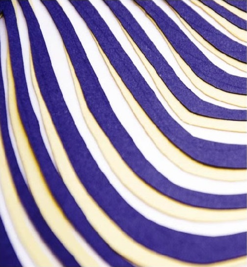
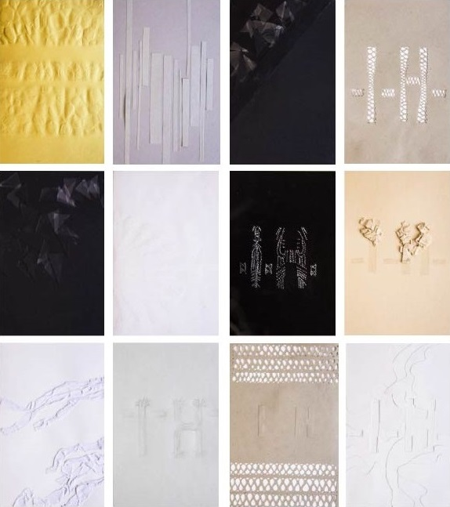

L'univers de la couturière Iris Van Herpen se centre sur un atmosphère organique, biomimétique, sculptural. La carte d'invitation qui vise à représenter son exposition doit retranscrire les mêmes intéractions visuelles et tactiles que l'on peut entrevoir dans tous ses projets.
 